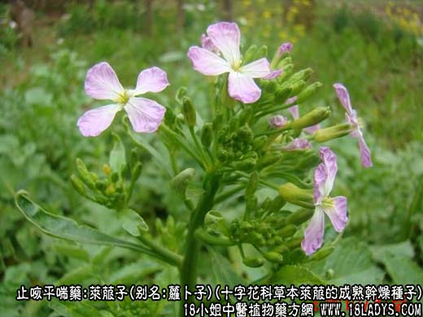
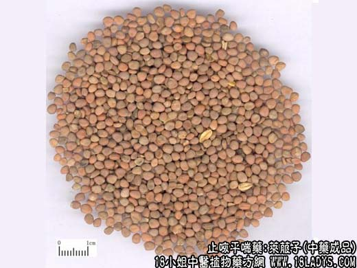
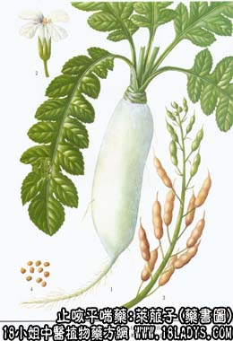

莱菔子为常用中药，始载《唐本草》。
别名：萝卜子、罗苋子、罗卜子、卜子。
来源：为十字花科一年或二年生草本植物莱菔（水罗卜、汴罗卜、青罗卜、白卜萝等多）的成熟干燥种子。均为栽培。
产地：全国各地均有生产。
性状鉴别：种子呈类圆形略扁。长径2.5~4毫米，短径约2~3毫米，厚约1~2毫米。表面红棕色或灰棕色，一侧有数条纵沟纹，种皮薄，内含黄绿色子叶两片，富油质。气微味微辛。以颗粒大饱满均匀红棕色者为佳。
主要成分：含有脂肪油、挥发油等。
药理作用：消食、化痰、下气、定喘，其原理为健胃、祛痰。
炮制：炒用。
性味：甘、辛、平。
归经：入肺、脾经。
功能：降气定喘，化痰，消积。
主治：咳嗽痰喘、食积气滞、胸腹胀满，痢疾后重。
临床应用：1、用于治疗肠胃积滞，适用于有腹胀、肠鸣、嗳气吞酸、腹泻后重等症状者，常配山楂、麦芽、神曲等。近年来，在中西医结合治疗急腹症中，利用莱菔子的破气导滞作用，加入大承气汤中，加强消导作用，方入加味大承气汤。
2、用于治疗咳嗽痰喘，对慢性喘息性气管炎见证偏热、偏实者较合适，取其有化痰而降气的作用，从而减轻喘嗽，配苏子、白芥子等，方入三子解喘汤，或配白果、陈皮、熟地等。方如莱菔白果汤。
使用注意：1、莱菔子用于降气消食时宜炒用，用于化痰定喘时宜生用。一般情况下也可生、熟各半。
3、前人有谓服人参、党参者忌用莱菔子。但实际上两者并非配伍禁忌，合用后不会产生什么剧烈反应；只不过是人参、党参补气，莱菔子破气，体虚者既已服参，如又服莱菔子，恐其会抵消补气作用而已。
用量：3~9g。
处方举例：莱菔白果汤：莱菔子9g，白果9g，熟地18g，陈皮6g，杏仁9g，水煎服。
附：地骷髅
本皮为莱菔子成熟后，拔出地下枯瘦多筋无肉的萝卜，洗净晒干后亦供药用，名枯萝卜（仙人头）。味甘性平，如肺经。功能：利水消肿，宣废气。主治：肺痈，解煤气中毒。